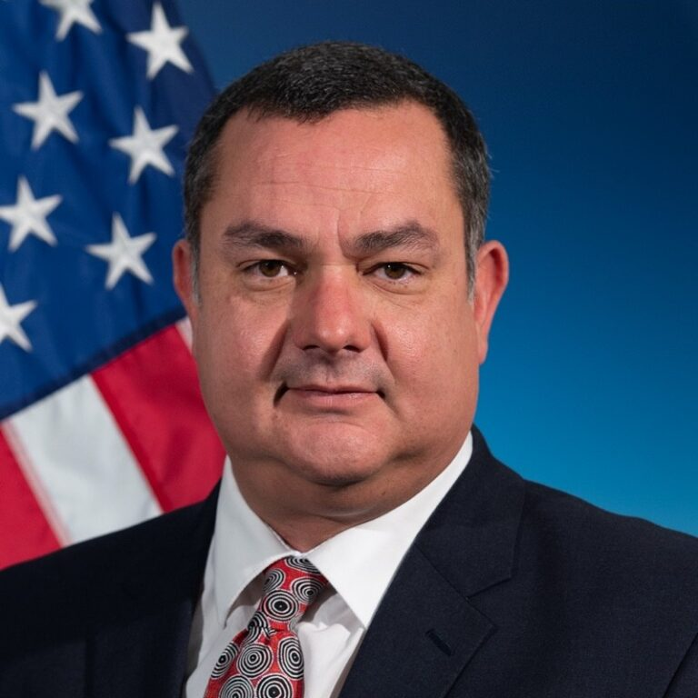

Observe
Use multimodal data sources and quantitative techniques to detect infrastructure components and topological information.
IMAGERY + VISION MODELSCONNECTED SYSTEMS. SHARED RESILIENCE.
One spatiotemporal simulation engine for the world’s critical infrastructure. Detecting it, modeling how it fails, quantifying impacts, and turning evidence into cost-benefit decisions to protect missions.
Explore the engineA JOINT GEORGE MASON INITIATIVE
Connecting science, engineering and computing.
Power & energy
+Telecommunications
+Space & PNT
+Transportation
01 / OUR APPROACH
We need new methodologies to quantify cyber-physical critical infrastructure vulnerability, risk and resilience.
Government and industry depend on systems that must stay operational. We bring power grids, telecoms, transport and space assets into a common modelling framework to understand those dependencies—and how to reduce their risks.
THE COMMON ENGINE
Use multimodal data sources and quantitative techniques to detect infrastructure components and topological information.
IMAGERY + VISION MODELSBuild connected network flow models of power, telecoms, space, transportation and other critical cyber-physical infrastructure systems.
NETWORKS + DEPENDENCIESExplore spatiotemporal infrastructure and human demand changes when disrupted. Use AI reasoning to iteratively improve our modeling.
SCENARIOS + AI REASONINGKeep humans in the loop to make final decisions that protect missions, supported by twinning, apps, software, and AI reasoning capabilities.
AI REASONING + HUMAN DECISIONS02 / RESEARCH THEMES
Explore the research that powers the engine.
SEE THE SYSTEM
Detecting power, telecoms and transport assets, their capacity and the demand they serve. A connected picture begins with knowing what is there.
03 / OUR PEOPLE

CO-LEAD
Mission engineering methods, sponsor partnerships and the transition from research to practice.
CO-LEAD
Critical infrastructure risk modelling, cascading failure, and satellite and PNT dependencies.
CO-LEAD
Cyber security of power systems; spectrum and secure, resilient telecoms networks.
Liling Huang
Shivam Chaturvedi
Kai Zeng
Khaled Khasawneh
Sai Manoj Pudukotai Dinakarrao
Peter Pachowicz
RESEARCH INTO PRACTICE
Delivered by Patriot Labs, George Mason University’s Rapid Prototyping Research Center, GMU's College of Science, and College of Engineering and Computing.
04 / WORK WITH US
Please get in touch to discuss the resilience needs of your cyber-physical infrastructure systems.